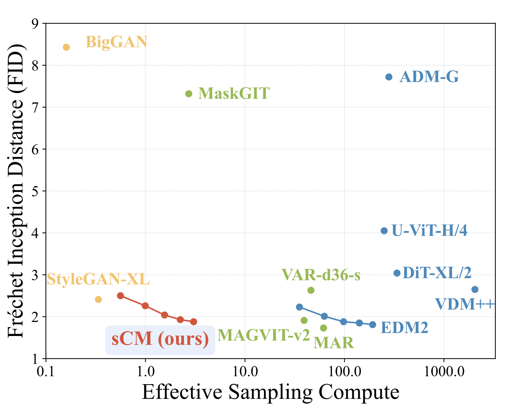
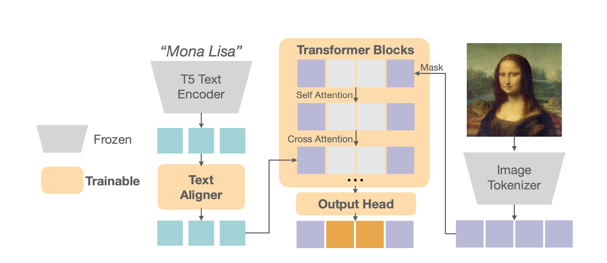
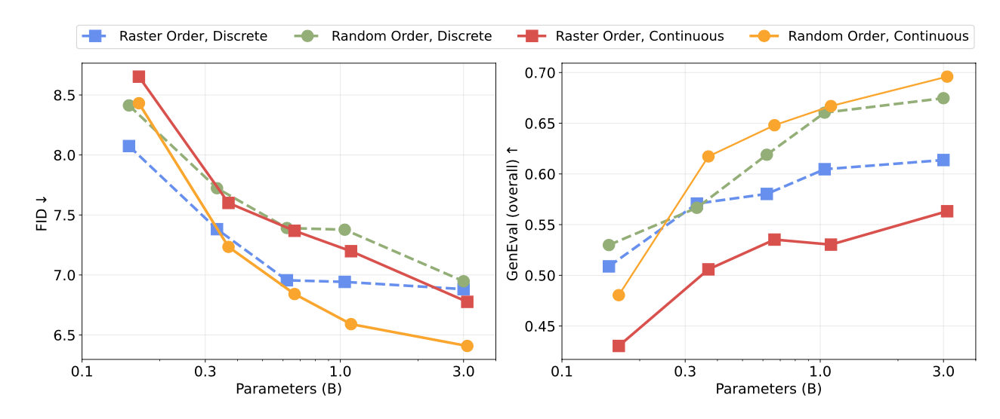
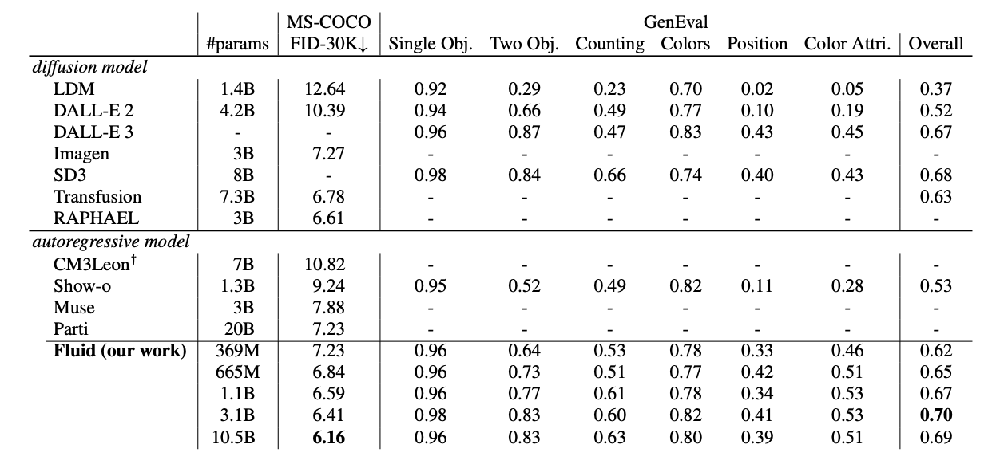
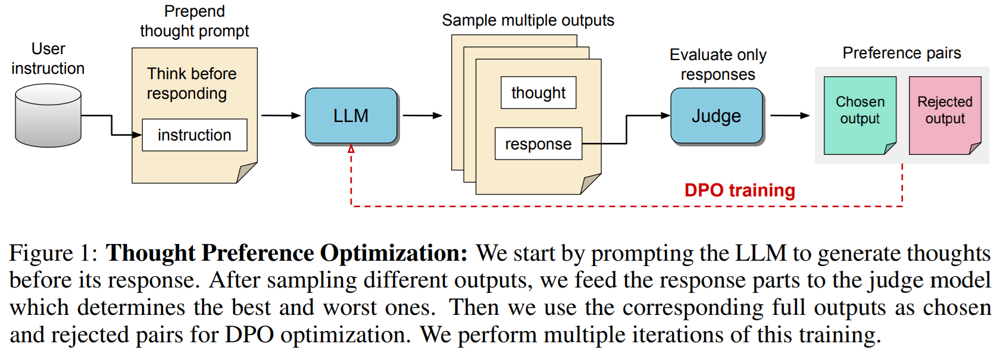
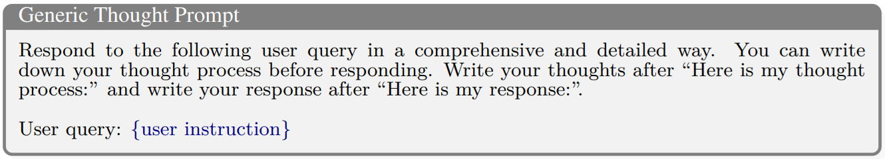
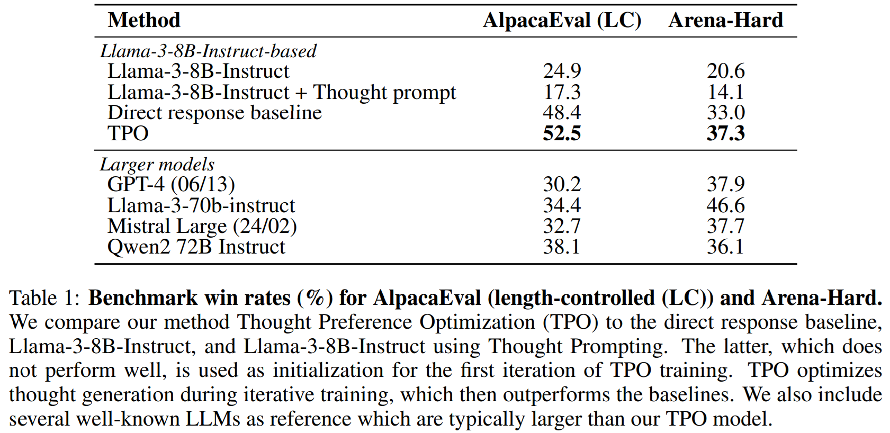
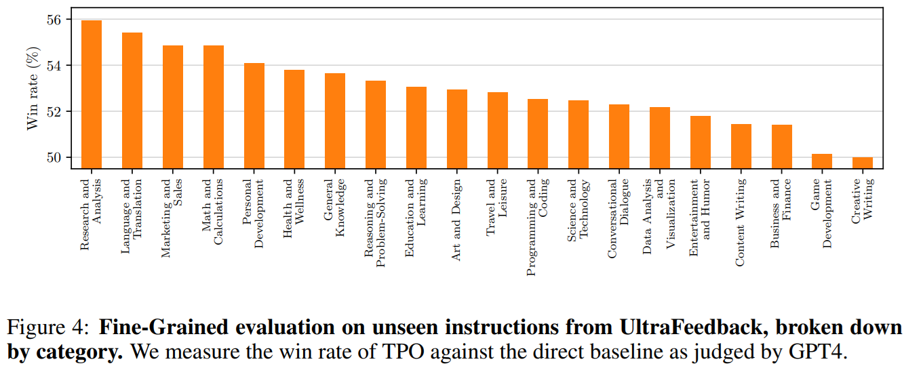

October Papers: Improving image generation & making LLMs think
This month brought us some exciting developments in improving image-generating models, as well as some interesting insights into how to make large language models think!
We start with promising results from OpenAI on using consistency models for image generation, challenging the well-established denoising diffusion paradigm. While not quite reaching the same performance, these models require orders of magnitude less compute to generate an image, and may provide a very promising future direction.
At the same time, researchers from Google DeepMind were able to achieve state-of-the-art performance in text-to-image generation, by scaling an autoregressive-type transformer to 10.5 billion parameters, stressing the importance of continuous token representations for images.
Finally, since the introduction of OpenAI's o1 model, there has been a growing interest within the research community in understanding how to make large language models reason. In Thinking LLMs, the authors propose a training method to improve the responses from LLMs by eliciting a thought process before generating the answer.
We hope you enjoy these month's papers as much as we did! If you have thoughts or questions, please reach out to us at @GCResearchTeam.
We hope you enjoy this month's papers as much as we did! If you have thoughts or questions, please reach out to us at @GCResearchTeam.
Simplifying, Stabilizing & Scaling Continuous-Time Consistency Models
The key idea
This paper describes a range of techniques for stabilizing the training of consistency models: generative models which produce images from noise in a small number of iterations. Their improvements allow scaling to larger model size (1.5 billion parameters) which results in Frechet Inception Distance (FID) scores within 10% of the current state of the art for image generation but with orders of magnitude lower computational cost and better parameter efficiency than some larger networks.

Background
Diffusion models, for example denoising diffusion probabilistic models (DDPMs), require hundreds or thousands of iterations to reverse a noising process and produce a sample. Consistency models (CMs), in contrast, are generative models that produce samples from noise in a single step (or a few steps of repeated denoising and noising if higher quality is required). Consistency models are trained either by distillation, e.g. from a pre-trained DDPM, or from scratch in such a way that any starting point on the same trajectory produces the same final sample (i.e samples are self-consistent).
The reduction in iterations required for sampling can reduce computational cost by orders of magnitude, while the consistency property adds robustness by preventing mode collapse which could manifest as poor variety in generated images (only representing averaged subsets of the training distribution). The trade-off for these advantages is somewhat reduced generation quality (FID scores) compared to other methods.
Continuous-time CMs reformulate the training objective to score match in the CM's tangent space, avoiding discretization errors and the need to evaluate the score explicitly from a pre-trained model. This introduces various instabilities in both numerics and training dynamics which this work aims to address.
Projecting the score into tangent space also requires forward mode auto-differentiation to efficiently compute Jacobian vector products (JVPs) with the tangent function \(\partial {f_\theta(x_t,t)}/\partial{dt}\): the derivative of a high-dimensional image with respect to a scalar (time).
Their method
The authors use a TrigFlow formulation which uses \(sin(t)\) and \(cos(t)\) as interpolants to enforce boundary conditions. This formulation unifies previously proposed forms of diffusion but it is also simpler to stabilize. The resulting tangent function only has one unstable term (determined empirically). This is stabilized by a number of techniques:
- Use a warm up schedule for the unstable term in the tangent.
- Remove the conditioning function on the time variable to avoid overflow in the tangent function.
- Use positional embedding instead of Fourier embedding to avoid unstable dynamics.
- Add extra normalizations within the adaptive group wise normalization layers.
- The tangent function, as a whole, is normalized or clipped when it appears in the gradient.
- The variational weight is learned adaptively (this also conveniently removes another training hyperparameter).
- Rearrange the JVP calculation to avoid overflow in FP16 training.
They additionally offer an efficient JVP implementation for flash attention used with forward-mode auto-differentiation allowing them to increase the model size further than would otherwise be practical.
Results
They compare two variants of their model, consistency training (sCT) and distillation (sCD), with a range of other models. sCD (distillation from a pre-trained network) is shown to be the preferred method as it gives better task performance than sCT, is compatible with classifier free guidance, and is also more computationally efficient for larger image sizes. They also show evidence that sCD has the desireable property of scaling at the same rate as the teacher model.
The table below shows sample quality for a small subset of their comparisons (see the full paper for their comprehensive results):
| Model | # Function Evaluations(↓) | FID(↓) | #Params |
|---|---|---|---|
| sCT-XXL (theirs) | 2 | 3.76 | 1.5B |
| sCD-XXL (theirs) | 1 | 2.28 | 1.5B |
| sCD-XXL (theirs) | 2 | 1.88 | 1.5B |
| EDM2-L | 126 | 1.88 | 778M |
| EDM2-XXL | 126 | 1.81 | 1.5B |
| MAR | 128 | 1.73 | 481M |
Further improvements may close the above gap and improve parameter efficiency with the potential to allow high-quality images to be generated in real-time.
Fluid: Scaling Autoregressive Text-to-image Generative Models with Continuous Tokens
The key idea
Although scaling autoregressive models has proven remarkably successful in natural language processing, their performance has been lagging behind the dominant denoising diffusion paradigm in text-to-image generation (e.g. Stable Diffusion, Imagen). Building upon their previous work, the authors showcase that the autoregressive transformer architecture can achieve state-of-the-art performance in image generation through two main considerations: using continuous tokens, generated in a random order.

Background
Text-to-image diffusion models have demonstrated groundbreaking capabilities in generating photorealistic images from user prompts. However, these models are generally exceedingly computationally expensive as they require multiple denoising steps to generate a single image, thus motivating the search for more efficient alternatives. At the same time, previous attempts at using autoregressive transformers (such as Parti) have not been able to match the performance of the diffusion models. These models are often used with discrete tokenizers, where the image patches are quantized to a finite vocabulary, so that the cross-entropy loss can be used in the same vein as in language models.
Their method
Following up on their previous work, the authors study two main aspects of the architecture. Firstly, in order to tackle the degradation introduced by discretizing the image patches, the authors consider converting the image into continuous tokens. To accommodate this, instead of the final output of the transformer generating a categorical distribution across the finite vocabulary, the output representation of the final layer is fed into a small six-layer MLP diffusion head. This diffusion process then generates the predicted image token, utilizing the standard diffusion loss during training.
Secondly, the authors consider the effect of generating the image tokens in a raster order vs. a random order. For the former, the tokens are generated sequentially one-by-one from left to right as in a GPT-style transformer. For the latter, tokens are generated in a random order using BERT-style generation, which can facilitate generating multiple tokens at a time, albeit preventing KV caching.

Their results show that the best performance is achieved using continuous tokens generated in a random order, and they scale this architecture to 10.5 billion parameters.
Results

By scaling up the Fluid architecture, the authors were able to achieve state-of-the-art performance, evaluated using zero-shot FID on the MS-COCO dataset as well as GenEval score.
Takeaways
The authors show compelling evidence that using a BERT-style transformer architecture with a lightweight token-generating diffusion head can lead to strong text-to-image results compared to previous state-of-the-art, highlighting a promising alternative to the popular diffusion models.
Thinking LLMs: General Instruction Following with Thought Generation
The key idea
There has been a growing trend in allowing LLMs to use more inference-time compute to generate answers to harder questions. The Chain-of-Thought approach, which pushes the model to self-correct and iteratively revise its answer, has shown significant promise, particularly for tasks involving maths and logic. However, in principle, taking the time to think should be helpful for a broad range of tasks. The authors propose a method to equip existing LLMs with the ability to think and plan before outputting a response through a custom post-training procedure called Thought Process Optimization (TPO). The technique does not require any additional human data, instead leveraging Reinforcement Learning from AI Feedback (RLAIF).

Their method
The LLM's output is divided into two parts: the thought process (which, differently from CoT, will not be shown to the user) and the actual response. In order to achieve this separation, the user query is prepended with a generic thought prompt, of the form:

Simply doing this will actually degrade the performance of the model, as instruction-tuned LLMs have been heavily optimized to provide direct responses. The model needs therefore to be fine-tuned to produce useful thoughts. Crucially, no instructions on how to think are provided: the LLM is incentivised to generate its own thoughts, using only the quality of the response as the steering metric. This approach has the advantage of not requiring any additional training data on human thoughts, relying entirely on RLAIF.
Thought Process Optimization training is performed over several iterations. During an iteration, for each training instruction (concatenated to the thought prompt), multiple outputs are sampled in parallel. A judge model scores the outputs by only looking at the response part, ignoring the thought process. The best- and worst-scoring samples (now including the thought process) are then taken to construct a preference pair, which will be used as training data for the next iteration using a Direct Preference Optimization loss. By doing so, the model is able to learn which thoughts lead to a better response.
Results
The authors use Llama-3-8B-Instruct as the seed model. On both the AlpacaEval and Arena-Hard benchmarks, the LLM with Thought Process Optimization significantly outperforms the seed model, approaching (or even surpassing) the performance of much larger models. Interestingly enough, the fine-tuning procedure shows great benefits even when the model is asked to produce direct responses without any thinking ("Direct response baseline" in the table).

Improvements over the seed model are shown to consistently increase with the number of TPO fine-tuning iterations. When looking at individual categories of instructions, it is surprising to notice that - while mathematical and analytic tasks benefit from thinking - the categories with the larger improvements are actually non-reasoning ones, like language translation and writing, or marketing.

Takeaways
This work highlights how the reasoning abilities of an LLM at test time can be improved through RLAIF by letting the model learn on its own how to generate useful thoughts, unlike previous techniques (like self-correction and self-refinement) that relied on supervised fine-tuning. The promising results, especially in areas that have been typically believed not to require much reasoning skills, will surely spark future research on the benefits of spending more compute at inference time.